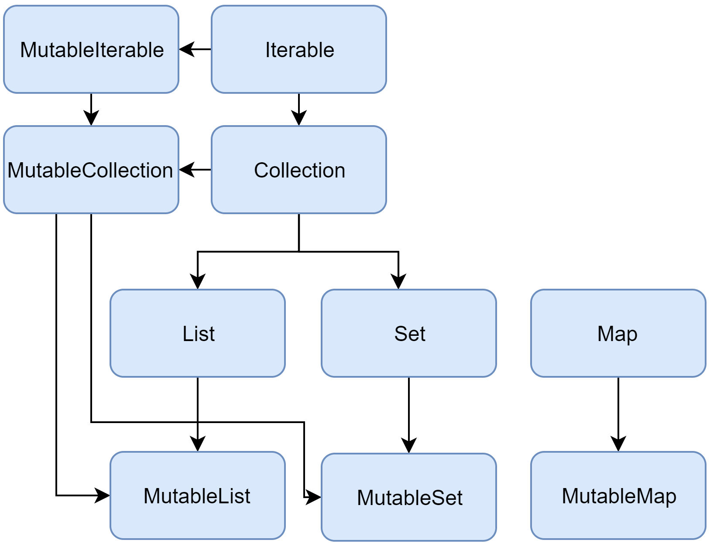

集合概述
Kotlin 标准库提供了一整套用于管理集合的工具，集合是可变数量 （可能为零）的一组条目，各种集合对于解决问题都具有重要意义，并且经常用到。
集合是大多数编程语言的常见概念，因此如果熟悉像 Java 或者 Python 语言的集合，那么可以跳过这一介绍转到详细部分。
集合通常包含相同类型的一些（数目也可以为零）对象。集合中的对象称为元素或条目。例如，一个系的所有学生组成一个集合，可以用于计算他们的平均年龄。
以下是 Kotlin 相关的集合类型：
- List 是一个有序集合，可通过索引（反映元素位置的整数）访问元素。 元素可以在 list 中出现多次。列表的一个示例是电话号码：有一组数字、这些数字的顺序很重要并且数字可以重复。
- Set 是唯一元素的集合。它反映了集合（set）的数学抽象：一组无重复的对象。一般来说 set 中元素的顺序并不重要。例如，the numbers on lottery tickets form a set: they are unique, and their order is not important.
- Map（或者字典）是一组键值对。键是唯一的，每个键都刚好映射到一个值。 值可以重复。map 对于存储对象之间的逻辑连接非常有用，例如，员工的 ID 与员工的位置。
Kotlin 让你可以独立于所存储对象的确切类型来操作集合。换句话说，将
String 添加到 String list 中的方式与添加 Int 或者用户自定义类的到相应 list 中的方式相同。
因此，Kotlin 标准库为创建、填充、管理任何类型的集合提供了泛型的（通用的，双关）接口、类与函数。
这些集合接口与相关函数位于 kotlin.collections 包中。我们来大致了解下其内容。
集合类型
Kotlin 标准库提供了基本集合类型的实现： set、list 以及 map。 一对接口代表每种集合类型：
- 一个 只读 接口，提供访问集合元素的操作。
- 一个 可变 接口，通过写操作扩展相应的只读接口：添加、删除及更新其元素。
请注意，更改可变集合不需要它是以 var 定义的变量：写操作修改同一个可变集合对象，因此引用不会改变。
但是，如果尝试对 val 集合重新赋值，你将收到编译错误。
fun main() {
//sampleStart
val numbers = mutableListOf("one", "two", "three", "four")
numbers.add("five") // 这是可以的
println(numbers)
//numbers = mutableListOf("six", "seven") // 编译错误
//sampleEnd
}
只读集合类型是型变的。
这意味着，如果类 Rectangle 继承自 Shape，则可以在需要 List <Shape> 的任何地方使用 List <Rectangle>。
换句话说，集合类型与元素类型具有相同的子类型关系。 map 在值（value）类型上是型变的，但在键（key）类型上不是。
反之，可变集合不是型变的；否则将导致运行时故障。 如果 MutableList <Rectangle> 是 MutableList <Shape>
的子类型，你可以在其中插入其他 Shape 的继承者（例如，Circle），从而违反了它的 Rectangle 类型参数。
下面是 Kotlin 集合接口的图表：

让我们来看看接口及其实现。 To learn about Collection, read the section below.
To learn about List, Set, and Map, you can either read the corresponding sections or watch a video
by Sebastian Aigner, Kotlin Developer Advocate:
YouTube 视频：Kotlin Collections Overview
Collection
Collection<T> 是集合层次结构的根。这个接口表示一个只读集合的共同行为：检索大小、
检测是否为成员等等。
Collection 继承自 Iterable <T> 接口，它定义了迭代元素的操作。可以使用
Collection 作为适用于不同集合类型的函数的参数。对于更具体的情况，请使用
Collection 的继承者： List
与 Set。
fun printAll(strings: Collection<String>) {
for(s in strings) print("$s ")
println()
}
fun main() {
val stringList = listOf("one", "two", "one")
printAll(stringList)
val stringSet = setOf("one", "two", "three")
printAll(stringSet)
}
MutableCollection<T> 是一个具有写操作的 Collection 接口，例如 add 以及 remove。
fun List<String>.getShortWordsTo(shortWords: MutableList<String>, maxLength: Int) {
this.filterTo(shortWords) { it.length <= maxLength }
// throwing away the articles
val articles = setOf("a", "A", "an", "An", "the", "The")
shortWords -= articles
}
fun main() {
val words = "A long time ago in a galaxy far far away".split(" ")
val shortWords = mutableListOf<String>()
words.getShortWordsTo(shortWords, 3)
println(shortWords)
}
List
List<T> 以指定的顺序存储元素，并提供使用索引访问元素的方法。索引从 0（第一个元素的索引）开始直到 lastIndex（即 (list.size - 1)）。
fun main() {
//sampleStart
val numbers = listOf("one", "two", "three", "four")
println("Number of elements: ${numbers.size}")
println("Third element: ${numbers.get(2)}")
println("Fourth element: ${numbers[3]}")
println("Index of element \"two\" ${numbers.indexOf("two")}")
//sampleEnd
}
List 元素（包括空值）可以重复：List 可以包含任意数量的相同对象或单个对象的出现。 如果两个 List 在相同的位置具有相同大小和相同结构的元素， 那么认为它们是相等的。
data class Person(var name: String, var age: Int)
fun main() {
//sampleStart
val bob = Person("Bob", 31)
val people = listOf(Person("Adam", 20), bob, bob)
val people2 = listOf(Person("Adam", 20), Person("Bob", 31), bob)
println(people == people2)
bob.age = 32
println(people == people2)
//sampleEnd
}
MutableList<T> 是可以进行写操作的 List，例如用于在特定位置添加或删除元素。
fun main() {
//sampleStart
val numbers = mutableListOf(1, 2, 3, 4)
numbers.add(5)
numbers.removeAt(1)
numbers[0] = 0
numbers.shuffle()
println(numbers)
//sampleEnd
}
如你所见，在某些方面，List 与数组（Array）非常相似。 但是，有一个重要的区别：数组的大小是在初始化时定义的，永远不会改变; 反之，List 没有预定义的大小；作为写操作的结果，可以更改 List 的大小：添加、 更新或删除元素。
在 Kotlin 中，List 的默认实现是 ArrayList，
可以将其视为可调整大小的数组。
Set
Set<T> 存储唯一的元素；
它们的顺序通常是未定义的。null 元素也是唯一的：一个 Set 只能包含一个 null。
当两个 set 具有相同的大小并且对于一个 set 中的每个元素都能在另一个 set 中存在相同元素，则两个 set 相等。
fun main() {
//sampleStart
val numbers = setOf(1, 2, 3, 4)
println("Number of elements: ${numbers.size}")
if (numbers.contains(1)) println("1 is in the set")
val numbersBackwards = setOf(4, 3, 2, 1)
println("The sets are equal: ${numbers == numbersBackwards}")
//sampleEnd
}
MutableSet 是一个带有来自 MutableCollection
的写操作接口的 Set。
Set的默认实现 - LinkedHashSet——
保留元素插入的顺序。
因此，依赖于顺序的函数，例如 first() 或 last()，会在这些 set 上返回可预测的结果。
fun main() {
//sampleStart
val numbers = setOf(1, 2, 3, 4) // LinkedHashSet is the default implementation
val numbersBackwards = setOf(4, 3, 2, 1)
println(numbers.first() == numbersBackwards.first())
println(numbers.first() == numbersBackwards.last())
//sampleEnd
}
另一种实现方式 – HashSet——
不声明元素的顺序，所以在它上面调用这些函数会返回不可预测的结果。但是，HashSet
只需要较少的内存来存储相同数量的元素。
Map
Map<K, V> 不是
Collection 接口的继承者；但是它也是 Kotlin 的一种集合类型。
Map 存储 键-值 对（或 条目）；键是唯一的，但是不同的键可以与相同的值配对。
Map 接口提供特定的函数进行通过键访问值、搜索键和值等操作。
fun main() {
//sampleStart
val numbersMap = mapOf("key1" to 1, "key2" to 2, "key3" to 3, "key4" to 1)
println("All keys: ${numbersMap.keys}")
println("All values: ${numbersMap.values}")
if ("key2" in numbersMap) println("Value by key \"key2\": ${numbersMap["key2"]}")
if (1 in numbersMap.values) println("The value 1 is in the map")
if (numbersMap.containsValue(1)) println("The value 1 is in the map") // 同上
//sampleEnd
}
无论键值对的顺序如何，包含相同键值对的两个 Map 是相等的。
fun main() {
//sampleStart
val numbersMap = mapOf("key1" to 1, "key2" to 2, "key3" to 3, "key4" to 1)
val anotherMap = mapOf("key2" to 2, "key1" to 1, "key4" to 1, "key3" to 3)
println("The maps are equal: ${numbersMap == anotherMap}")
//sampleEnd
}
MutableMap 是一个具有写操作的 Map 接口，可以使用该接口添加一个新的键值对或更新给定键的值。
fun main() {
//sampleStart
val numbersMap = mutableMapOf("one" to 1, "two" to 2)
numbersMap.put("three", 3)
numbersMap["one"] = 11
println(numbersMap)
//sampleEnd
}
Map 的默认实现 – LinkedHashMap——
迭代 Map 时保留元素插入的顺序。
反之，另一种实现 – HashMap——
不声明元素的顺序。